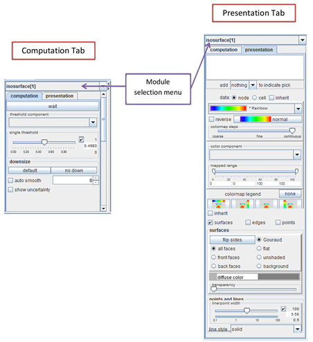
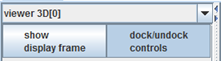

|
|
|
MODULE PANEL
Module Panel is the most diverse panel and its appearance depends on its functionality. Most Module Panels consist of Computation Tab and Presentation Tab. Computation Tab allows changing parameters of the module. Sometimes it includes wait button, which when pressed, allows modifying many parameters before running this module. This button is used, when module works for quite a long time. (see: description of particular module)
Presentation Tab allows to change the presentation and view of loaded module (see: presentation).

[Hint: Module selection menu enables to change selected module.]
Viewers’ Module Panels contain “show display frame” button which opens viewers’ window.
